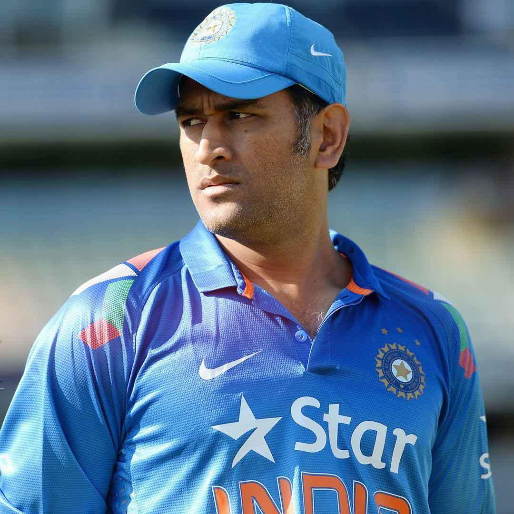
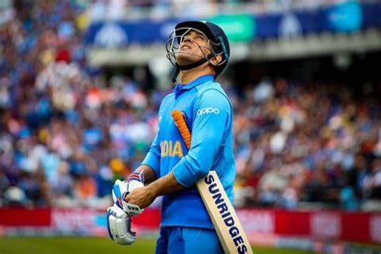
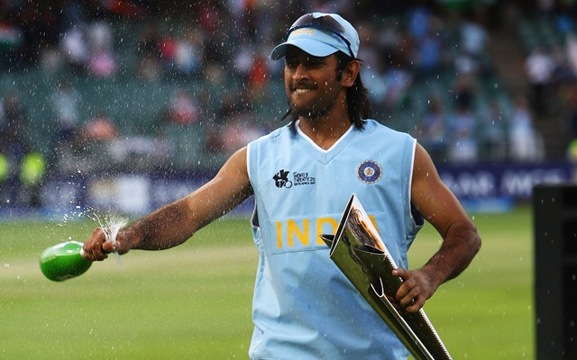
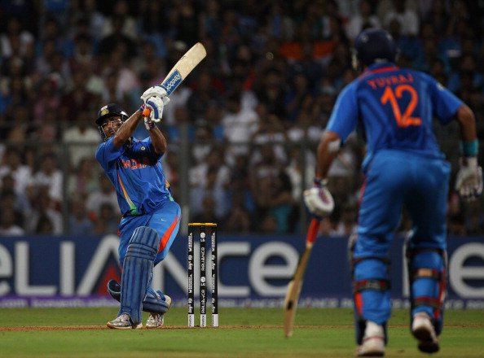
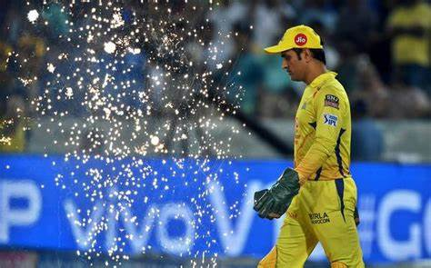
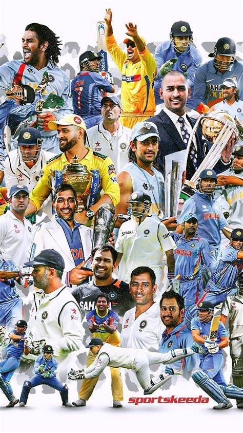

THIS WEBSITE IS CREATED BY NEELABHRA ©
MS DHONI
THE MAN-THE MYTH-THE MAHI

MS Dhoni, former Indian cricket captain, is renowned for his exceptional leadership and wicket-keeping skills.
Under his captaincy, India won the 2007 ICC T20 World Cup, 2010 and 2016 Asia Cups, 2011 ICC Cricket World Cup,
and the 2013 ICC Champions Trophy. Known as "Captain Cool," Dhoni's calm demeanor and strategic acumen have made
him a cricketing icon. He is the only captain to have won all ICC trophies. With over 10,000 ODI runs, Dhoni is
also a prolific batsman and one of the best finishers in cricket history. He retired from international cricket
in August 2020.

MS Dhoni's helicopter shot is iconic in cricket, characterized by a powerful, wristy flick of the bat that sends
the ball soaring over mid-wicket. This innovative shot, perfect for yorker deliveries, showcases Dhoni's
incredible hand-eye coordination and strength, making it a crowd favorite and a signature move that has left a
lasting mark on the game.
MSD IN WORLD CUP
2007 WORLD CUP
In 2007, MS Dhoni led the Indian cricket team to a historic victory in the inaugural ICC T20 World Cup held in
South Africa. Appointed as captain just before the tournament, Dhoni's leadership was instrumental in India's
triumph. The team showcased remarkable performances throughout, culminating in a thrilling final against
arch-rivals Pakistan. In a nail-biting finish, India won by five runs, with Dhoni's calm and strategic decisions
proving decisive. This victory not only cemented Dhoni's reputation as a formidable captain but also revitalized
Indian cricket, inspiring a new generation of cricketers and fans.

2011 WORLD CUP
In the 2011 ICC Cricket World Cup, MS Dhoni played a pivotal role as the captain of the Indian cricket team,
leading them to their second World Cup victory after a gap of 28 years. Dhoni's importance in the final against
Sri Lanka cannot be overstated. Batting at a crucial moment, he scored an unbeaten 91 runs, steering India to
victory with a six that remains etched in cricketing history. His calmness under pressure and strategic
decision-making, such as promoting himself up the batting order, showcased his leadership and ability to perform
in high-stakes situations, solidifying his legacy as one of India's greatest captains.

THALA FOR A REASON
MS Dhoni's tenure as captain of the Chennai Super Kings (CSK) in the Indian Premier League (IPL) has been
marked by unprecedented success, leading the team to win the IPL trophy on multiple occasions. Under his
captaincy, CSK clinched the IPL title in 2010, 2011, 2018, 2021 and 2023 making them the most successful
franchises in IPL history. Dhoni's leadership style, characterized by strategic acumen and calmness under
pressure, was instrumental in CSK's consistent performance and ability to dominate the tournament. His role as a
finisher and wicketkeeper-batsman has made him a pivotal figure in shaping CSK's legacy in the IPL.

A TRIBUTE TO MAHENDRA SINGH DHONI

MEMES
CLICK HERE TO WATCH MOST FAMOUS MEME
THALA- 7 -🐐